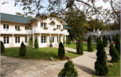
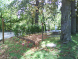
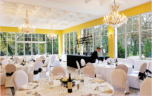
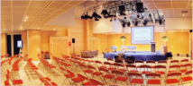

Lieu et accès
Entouré d'un lac, offrant un lieu au calme, le chalet de la porte jaune offre six espaces modulables pouvant accueillir jusqu’à 300 personnes. Les discussions et les repas peuvent se prolonger à l’extérieur afin de profiter de l’agréable cadre verdoyant : « la campagne à Paris ».
|  Le chalet |
 Le jardin |
Le lac |
Les mets fins |
 Le dîner |
 La salle plénière |
Comment s'y rendre:
- En voiture: Avenue de Nogent, Bois de Vincennes, 75012 Paris, France - Parking gratuit.
- Métro Ligne 1, station « Château de Vincennes » puis bus 114 ou 210, arrêt Porte Jaune.
- RER A2 direction Boissy-Saint-Léger, station Fontenay-sous-Bois
Plan d'accès
Agrandir le plan
Liste des hotels à proximité du chalet
Hôtel Ibis Porte de Montreuil
2 Avenue du Professeur André Lenierre
75020 Paris
Tél : 01 43 63 16 16
Hôtel Mercure Nogentel
Parking Fermé à partir de 23h (7€ par voiture)
8 rue du Port
94130 Nogent sur Marne
Tél : 01 48 72 70 00
Hôtel Campanile
Parking fermé à partir de 23 h mais non gardé (8 € par voiture)
Quai du Port
94130 Nogent sur Marne
Tél : 01 48 72 51 98
Hôtel Saint Louis 3*
Parking Shell à 5 min de l’hôtel,
2 Bis rue Robert Giraudineau
94300 Vincennes
Tél : 01 43 74 16 78


{kind=link}
{kind=link}
{kind=link}
{kind=link}
{kind=link}
{kind=link}